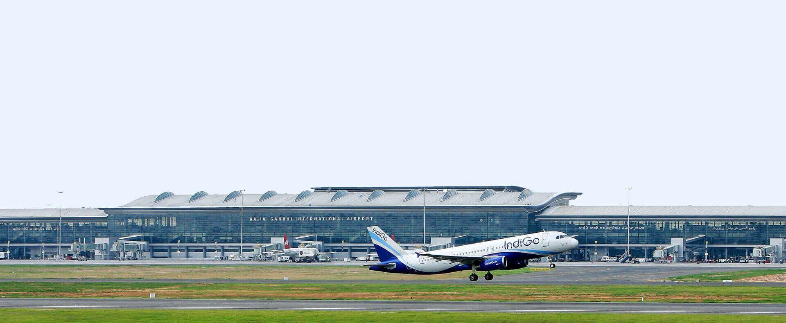
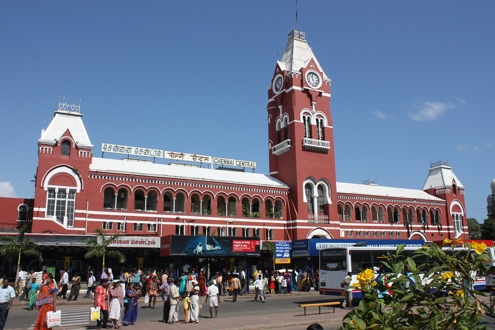
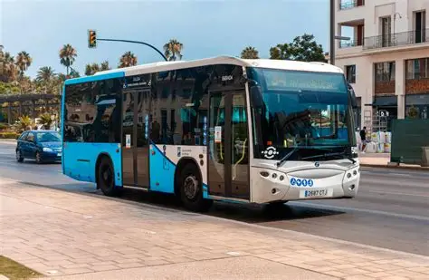
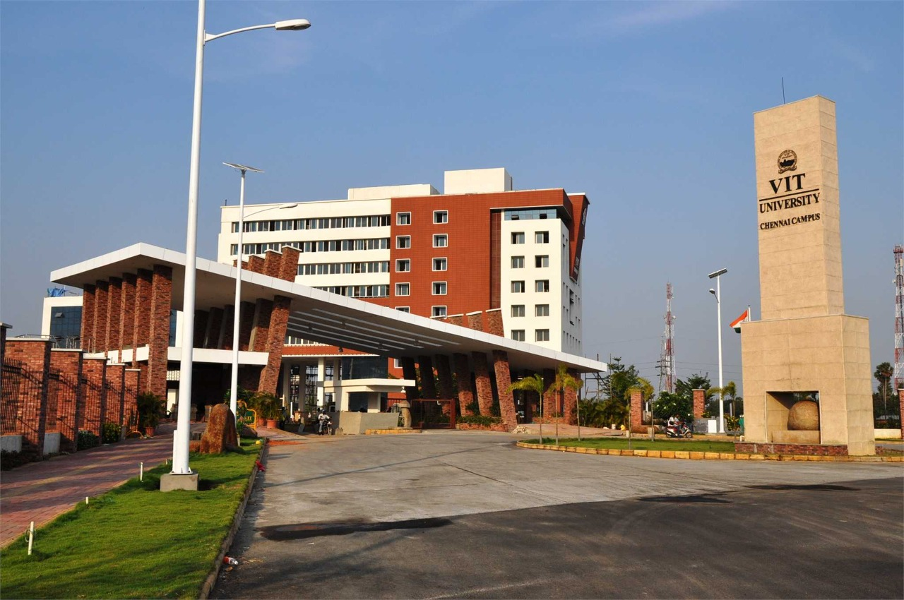

SUMMER SCHOOL 2026
Logistics
Replace the sample information below with confirmed event details.
Travel and Accommodation
Venue
[Institution / Department / Building]
[Full postal address]
How to Reach
By Air
Chennai is served by the Chennai International Airport (MAA), with both domestic and international terminals.
- Taxi: Prepaid and app-based taxi services like Uber and Ola are available. The drive to VIT Chennai takes 30–45 minutes.
- Public Transport: MTC buses and suburban trains are also available but may be less convenient if traveling with luggage.

By Train
Chennai has two major railway stations: Chennai Central and Egmore. Both are well connected to major Indian cities.
- From Chennai Central: Taxis and metro services are available. Approx. 45–60 minutes to VIT Chennai.
- From Egmore: Well connected by suburban trains and buses. Travel time 40–50 minutes.

By Bus
Chennai Mofussil Bus Terminus (CMBT), one of Asia’s largest bus stations, connects Chennai with many South Indian cities.
Kalaignar Centenary Bus Terminus (Kilambakkam): A new modern terminus in South Chennai, closer to VIT. Travel time: ~25–35 minutes by taxi/auto or MTC buses.
- Local Buses: Frequent MTC buses connect CMBT to various parts of the city.
- Taxi/Auto: Prepaid taxis and Ola/Uber are available outside the bus terminus. Approx. 40–60 minutes to VIT Chennai.

Accommodation
Provide details of campus guest houses, hostels or nearby hotels. Include booking contact, tariff and reservation deadline.
Local Information
For any further enquiries, please contact Mr. Suresh Kumar – +91 9655010998.
